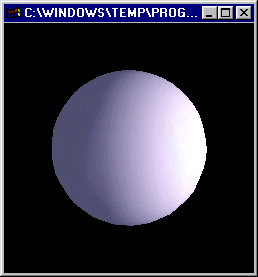

urce source source source source source source source source source source |
[program
two]
This program renders a glu sphere with lighting. Rather than repeating the whole code, I'll only detail the
changes I've made to program1 or any new lines/functions.
Print out the source file from the zip and keep it
handy, that way you'll be able to tell what's going on properly.

After we've declared the standard include files we create
some global variables to hold our lighting and object rotation data.
The floats on line 1 store the angle of rotation for the sphere object.
The integers on line 3 store data for glut's window interaction mechanism (more on
that later). The variable array on line 5 sets the colour for the ambient
light in the scene. Line 6 is the colour for the light source in the
scene. Finally line 7 stores the position from the origin for the
light. These variables will be used later to setup the illumination model.
[1] float angle, angle2;
[2]
[3] int moving, startx, starty;
[4]
[5] float ambient_light[] = {0.3, 0.3, 0.45, 1.0};
[6] float source_light[] = {0.9, 0.8, 0.8, 1.0};
[7] float light_pos[] = {7.0, 0.0, 0.0, 1.0};
In this program the "init" function has to set up the illumination model. We enable
GL_LIGHTING at line 5 and set the lighting model (see the manual) in the subsequent lines. GL_COLOR_MATERIAL is also required for lighting to work, so we enable that on line 11. Finally line 14 enables 'culling' back facing polygons - hopefully speeding up the rendering. Lighting is pretty complex and I'm not going into much detail here, so read the linked manual pages.[1] void init ( void )
[2] {
[3] glEnable (
GL_DEPTH_TEST );
[4]
[5] glEnable ( GL_LIGHTING );
[6] glLightModelfv (
GL_LIGHT_MODEL_AMBIENT, ambient_light );
[7] glLightfv ( GL_LIGHT0,
GL_DIFFUSE, source_light );
[8] glLightfv ( GL_LIGHT0,
GL_POSITION, light_pos );
[9] glEnable ( GL_LIGHT0 );
[10]
[11] glEnable ( GL_COLOR_MATERIAL );
[12] glColorMaterial ( GL_FRONT, GL_AMBIENT_AND_DIFFUSE );
[13]
[14] glEnable ( GL_CULL_FACE
);
[15] glClearColor ( 0.0, 0.0, 0.0, 0.0 );
[16] }
The next function,
"draw_earth" renders a solid filled glu sphere. Line 3 pops a
new matrix onto the stack (so subsequent transformations effectively start from
a new 'origin').
Line 4 rotates anything we draw 90 degrees in the X axis. We do this
because glu spheres are rendered on their side by default and look a bit
silly.
Line 5 changes the current colour to pure white. Line 6 sets up the
variable "q" to store the quadric glu sphere (don't worry about that
at this stage). The next two lines set the draw style of the quadric
object "q". Line 9 draws the sphere, using quadric
"q", a radius of 1.0 and 20 vertical and horizontal slices.
Finally, line 11 pops back to the previous transformation matrix.
[1] void draw_earth ( void )
[2] {
[3] glPushMatrix ( );
[4] glRotatef ( 90.0, 1.0, 0.0, 0.0 );
[5] glColor4f ( 1.0, 1.0, 1.0, 1.0 );
[6] GLUquadricObj* q = gluNewQuadric
( );
[7] gluQuadricDrawStyle ( q, GLU_FILL
);
[8] gluQuadricNormals ( q, GLU_SMOOTH );
[9] gluSphere ( q, 1.0, 20, 20 );
[10] gluDeleteQuadric ( q );
[11] glPopMatrix ( );
[12] }
"display"
has changed somewhat. We clear the screen and depth buffer as before, but
this time we also set the light position. Then we move the drawing
position -4.0
units along the Z axis. This is analogous to moving a 'camera' +4.0 units
in the Z axis and viewing our objects from there.
Lines 7 and 8 rotate the current transformation
matrix in the X and Y axes. The variables angle and angle2 are altered by
other functions.
[1] void display ( void
)
[2] {
[3] glClear ( GL_COLOR_BUFFER_BIT |
GL_DEPTH_BUFFER_BIT );
[4] glLightfv ( GL_LIGHT0,GL_POSITION,light_pos );
[5] glPushMatrix ( );
[6] glTranslatef ( 0.0, 0.0, -4.0 );
[7] glRotatef ( angle2, 1.0, 0.0, 0.0 );
[8] glRotatef ( angle, 0.0, 1.0, 0.0 );
[9] draw_earth ( );
[10] glPopMatrix ( );
[11] glutSwapBuffers ( );
[12] }
glut has callbacks for mouse/window interaction. The following function is called when the mouse is over the glut window. If the left button is pressed, a global variable "moving" is set to true and the current X and Y window positions are stored.
[1] void mouse ( int button, int state,
int x, int y )
[2] {
[3] if ( button == GLUT_LEFT_BUTTON && state == GLUT_DOWN )
[4] {
[5] moving = 1;
[6] startx = x;
[7] starty = y;
[8] }
[9] if ( button == GLUT_LEFT_BUTTON && state == GLUT_UP )
[10] moving = 0;
[11] }
When the mouse
is moving over the glut window the current X and Y positions are subtracted from
the mouse's initial start position (which was stored when "mouse" was
called). That value, which we should call the delta value - or change - is
added the existing 'angle' variables. The current X and Y become the new
'start' X and Y. Finally, we force glut to immediately redraw the screen.
Don't worry too much about the specifics of these two mouse-motion
functions. Functions like these aren't exclusive to glut/opengl. Any
Windows program that tracks the mouse has to do a similar thing.
[1] void motion ( int x, int y ) The idle function is called once every system update when
OpenGL isn't doing anything else.
We use it here to update the axial rotation of our ball, the value of which is
stored in the variable "angle". The if statement keeps
the value in range. As before,
[2] {
[3] if ( moving )
[4] {
[5] angle
= angle + ( x - startx );
[6] angle2 = angle2 +
( y - starty );
[7] startx = x;
[8] starty = y;
[9]
glutPostRedisplay();
[10] }
[11] }
[1] void idle_func ( void ) The 'main loop'
is very similar, it just adds lines for the new mouse, motion and idle callbacks
- (Lines 9, 10 and 14)
[2] {
[3] angle = angle + 0.1;
[4] if (angle == 360)
[5] angle = 0;
[6] glutPostRedisplay ( );
[7] }
[2] {
[3] glutInit ( &argc, argv );
[4] glutInitDisplayMode ( GLUT_RGB | GLUT_DOUBLE );
[5] glutInitWindowSize ( 250, 250 );
[6] glutCreateWindow ( argv[0] );
[7] init ( );
[8] glutReshapeFunc ( reshape );
[9] glutMouseFunc ( mouse
);
[10] glutMotionFunc ( motion
);
[11] glutKeyboardFunc( keyboard );
[13] glutDisplayFunc ( display );
[14] glutIdleFunc ( idle_func );
[15] glutMainLoop ( );
[16]
[17] return 0;
[18] }
Website and
content, Paul Groves